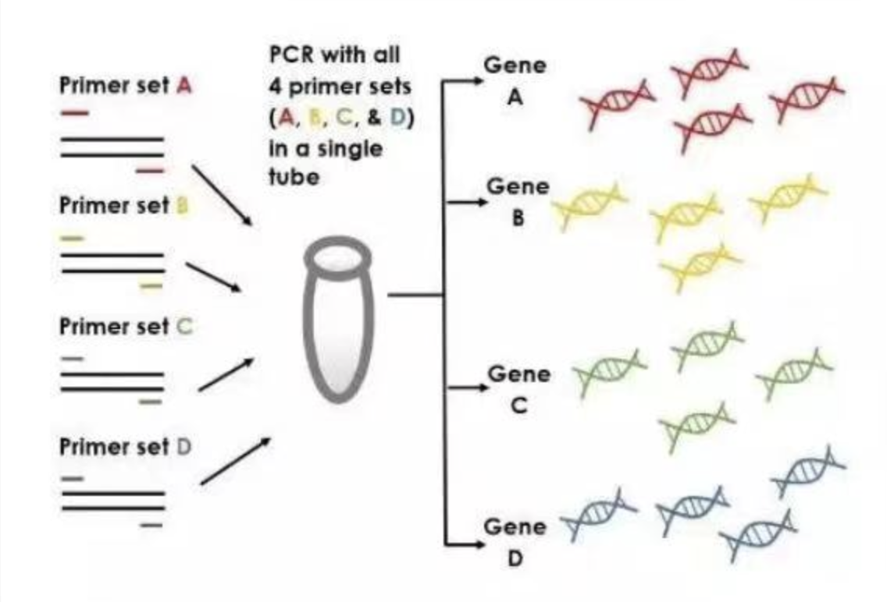

Science Communication
Thyroid disease is one of the most common endocrine disorders, affecting millions of individuals throughout Europe and a 5% of the general population [1]. Over 99% of affected patients suffer from hypothyroidism and are mainly prescribed levothyroxine: a medication that has a narrow range of doses at which is effective without adverse effects [2]. As a consequence, one-third of the patients who receive this treatment still exhibit symptomes.
Especially at the initial stages of the treatment, doses are adjusted by “trial-and-error” procedures, which require close tracking of the patients’ state by regular analytics and visits to the doctor. The treatment’s estimated total cost increases around 260 percentage points for the patients that require 3 or more annual dose adjustments in comparison with those that do not undergo levothyroxine dose changes [3].
Due to the current Sars COV-2 health crisis, patients’ that require frequent dose adjustments have got their clinical appointments cancelled. Accordingly, the study carried out by the Spanish Endocrine and Nutrition Association (SEEN) has identified an increase in the demand (19,5% to 77,4%) for an alternative such as Telemedicine (TM) [4]. However, current TM methods rely on the patient’s communication and technological skills, together with its degree of medication compliance.
Several studies have concluded that there is a clear need for patient-specific dosage optimization [1]. Consequently, the aim of this project was set as the development of an alternative treatment that remotely restores the whole thyroid feedback system, allowing to automatically adapt the dosage depending on each patient’s hormonal state. This way, Hormonic intends to reduce the number of visits to the doctor, while guaranteeing a correct and safe monitoring of the patients that does not depend on self-diagnosis methods.


Several studies have concluded that there is a clear need for patient-specific dosage optimization [1]. Consequently, the aim of this project was set as the development of an alternative treatment that remotely restores the whole thyroid feedback system, allowing to automatically adapt the dosage depending on each patient’s hormonal state. This way, Hormonic intends to reduce the number of visits to the doctor, while guaranteeing a correct and safe monitoring of the patients that does not depend on self-diagnosis methods.